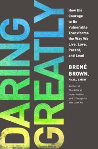
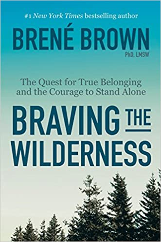

Works
Brené Brown Books
- 2007: I Thought It Was Just Me (But It Isn't): Telling the truth about perfectionism, inadequacy and
power.
- 2010: The Gifts of Imperfection: Let go of who you think you're supposed to be and embrace who you are.

- 2012: Daring Greatly: How the courage to be vulnerable transforms the way we live, love, parent and
lead.

- 2015: Rising Strong: The reckoning, the rumble, the revolution.

- 2017: Braving the Wilderness: The quest for true belonging and the courage to stand alone.

- 2018: Dare to Lead: Brave Work. Tough Conversations. Whole Hearts.